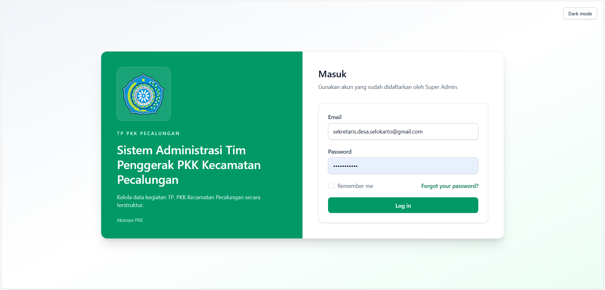

User Guide Lengkap
Daftar Isi
- Mulai Cepat
- Daftar Menu Sistem
- Panduan Peran: Sekretaris Desa
- Panduan Peran: Sekretaris Kecamatan
- Panduan Peran: Pokja Desa
- Panduan Peran: Pokja Kecamatan
- Panduan Peran: Super Admin
- Alur: Kelola Data Harian
- Alur: Filter Dashboard dan Membaca Grafik
- Alur: Cetak dan Ekspor Laporan
- FAQ (Pertanyaan yang Sering Muncul)
Catatan: Versi login dengan screenshot tetap tersedia pada file 01-login-siap-cetak.html.
Referensi Visual (1 Gambar)

1. Mulai Cepat
Untuk Siapa
Pengguna baru yang ingin langsung memakai sistem.
Tujuan
Anda bisa login, mengenali menu utama, dan mulai bekerja sesuai peran.
Langkah Singkat
- Buka halaman login sistem.
- Masukkan email dan kata sandi akun Anda.
- Setelah masuk, lihat menu yang muncul di sisi kiri.
- Pilih menu sesuai tugas Anda hari ini.
Yang Akan Anda Lihat
- Dashboard ringkas.
- Menu kerja sesuai peran akun Anda.
- Tanda hanya-baca pada menu yang tidak bisa diubah.
Jika Terkendala
- Jika gagal login: pastikan email dan kata sandi benar.
- Jika menu tidak muncul: hubungi admin untuk cek akses akun.
- Jika halaman menolak simpan data: kemungkinan menu Anda hanya-baca.
2. Daftar Menu Sistem
Catatan
- Menu yang tampil mengikuti peran, wilayah kerja, dan akses akun Anda.
- Tanda hanya-baca menandakan menu hanya bisa dilihat.
- Beberapa menu hanya muncul untuk peran tertentu.
Menu Umum (Desa/Kecamatan)
- Dashboard
- Arsip
- Cetak Lampiran
- Profil
Menu Super Admin
- Manajemen User
- Management Ijin Akses
- Management Arsip
- Profil
Menu Domain Desa
Daftar berikut tampil untuk akun dengan wilayah kerja desa.
Sekretaris PKK (Desa)
- Daftar Anggota Tim Penggerak PKK
- Buku Daftar Anggota TP PKK dan Kader
- Agenda Surat Masuk/Keluar
- Buku Daftar Hadir
- Buku Tamu
- Buku Notulen Rapat
- Buku Keuangan
- Buku Inventaris | 4.12
- Buku Kegiatan | 4.14
- Data Warga | 4.14.1a
- Kegiatan Warga 4.14.1b
- Buku Program Kerja TP PKK
- Buku Anggota Pokja
- Buku Prestasi
- Laporan Tahunan Tim Penggerak PKK
Pokja I (Desa)
- Buku Kegiatan
- Buku Inventaris
- Buku Tamu
- Buku Daftar Anggota TP PKK dan Kader
- Buku Bantuan
- Buku Prestasi
- Kelompok Simulasi dan Penyuluhan | 4.14.4f
- Buku Kegiatan BKL
- Buku Kegiatan BKR
- Buku PAAR
Pokja II (Desa)
- Buku Kegiatan
- Buku Inventaris
- Buku Tamu
- Data Pelatihan Kader | 4.14.3
- Data Taman Bacaan/Perpustakaan
- Data Koperasi
- Data Kejar Paket/KF/PAUD
- Literasi Warga (3 Buta)
- Data BKB (Kegiatan)
- Tutor Khusus KF/PAUD
- Rekap Pelatihan Kader Pokja II
- Pra Koperasi/UP2K
Pokja III (Desa)
- Buku Kegiatan
- Buku Inventaris | 4.12
- Buku Tamu
- Data Keluarga | 4.14.2a
- HATINYA PKK | 4.14.2b
- Industri Rumah Tangga | 4.14.2c
- Data Aset Sarana Desa/Kelurahan | 4.14.4
Pokja IV (Desa)
- Buku Kegiatan
- Buku Inventaris
- Buku Tamu
- Data Isian Posyandu oleh TP PKK
- Catatan Keluarga | 4.15
- Naskah Pelaporan Pilot Project Pokja IV
- Laporan Pelaksanaan Pilot Project Gerakan Keluarga Sehat Tanggap dan Tangguh Bencana
Menu Domain Kecamatan
Daftar berikut tampil untuk akun dengan wilayah kerja kecamatan.
Sekretaris PKK (Kecamatan)
- Daftar Anggota Tim Penggerak PKK
- Buku Daftar Anggota TP PKK dan Kader
- Agenda Surat Masuk/Keluar
- Buku Daftar Hadir
- Buku Tamu
- Buku Notulen Rapat
- Buku Keuangan
- Buku Inventaris | 4.12
- Buku Kegiatan | 4.14
- Data Warga | 4.14.1a
- Kegiatan Warga 4.14.1b
- Buku Program Kerja TP PKK
- Buku Anggota Pokja
- Buku Prestasi
- Laporan Tahunan Tim Penggerak PKK
Pokja I (Kecamatan)
- Buku Kegiatan
- Buku Inventaris
- Buku Tamu
- Buku Daftar Anggota TP PKK dan Kader
- Buku Bantuan
- Buku Prestasi
- Kelompok Simulasi dan Penyuluhan | 4.14.4f
- Buku Kegiatan BKL
- Buku Kegiatan BKR
- Buku PAAR
Pokja II (Kecamatan)
- Buku Kegiatan
- Buku Inventaris
- Buku Tamu
- Data Pelatihan Kader | 4.14.3
- Data Taman Bacaan/Perpustakaan
- Data Koperasi
- Data Kejar Paket/KF/PAUD
- Literasi Warga (3 Buta)
- Data BKB (Kegiatan)
- Tutor Khusus KF/PAUD
- Rekap Pelatihan Kader Pokja II
- Pra Koperasi/UP2K
Pokja III (Kecamatan)
- Buku Kegiatan
- Buku Inventaris | 4.12
- Buku Tamu
- Data Keluarga | 4.14.2a
- HATINYA PKK | 4.14.2b
- Industri Rumah Tangga | 4.14.2c
- Data Aset Sarana Desa/Kelurahan | 4.14.4
Pokja IV (Kecamatan)
- Buku Kegiatan
- Buku Inventaris
- Buku Tamu
- Data Isian Posyandu oleh TP PKK
- Catatan Keluarga | 4.15
- Naskah Pelaporan Pilot Project Pokja IV
- Laporan Pelaksanaan Pilot Project Gerakan Keluarga Sehat Tanggap dan Tangguh Bencana
Monitoring Kecamatan
- Rekap Kegiatan Desa (belum tampil di menu)
- Rekap Arsip Desa (belum tampil di menu)
3. Panduan Peran: Sekretaris Desa
Fokus Peran Anda
- Mengelola menu sekretaris di tingkat desa.
- Memantau data Pokja I-IV dalam mode baca.
Yang Bisa Anda Kerjakan
- Menambah, mengubah, dan mencetak data pada menu sekretaris.
- Melihat data pada menu pokja untuk kebutuhan pemantauan.
Alur Kerja Harian
- Cek dashboard untuk ringkasan kondisi data.
- Selesaikan input atau pembaruan data di menu sekretaris.
- Tinjau menu pokja untuk memastikan data sudah terisi.
- Cetak laporan bila dibutuhkan.
Label UI Sekretaris Desa
- Di panel kiri tertulis Menu Domain dengan daftar Sekretaris PKK dan Pokja.
- Menu Pokja biasanya berlabel BACA untuk menandakan hanya bisa dilihat.
- Di bagian atas tersedia tombol Dashboard, Arsip, Dark mode, Profil, dan Keluar.
- Di dashboard tersedia tombol Cetak Chart PDF, Terapkan Filter Chart, dan Sembunyikan Grafik.
Contoh Praktis
- Anda mencatat satu surat masuk hari ini, lalu mencetak laporan bulan berjalan untuk arsip.
Batasan yang Perlu Diketahui
- Pada menu pokja, Anda bisa melihat data tetapi tidak bisa mengubah.
- Jika muncul tanda hanya-baca, artinya menu tersebut hanya untuk dilihat.
4. Panduan Peran: Sekretaris Kecamatan
Fokus Peran Anda
- Mengelola menu sekretaris di tingkat kecamatan.
- Memantau data Pokja I-IV dalam mode baca.
- Memantau kegiatan desa pada menu monitoring kecamatan.
Yang Bisa Anda Kerjakan
- Menambah, mengubah, dan mencetak data pada menu sekretaris kecamatan.
- Melihat data pokja tanpa mengubah data.
- Melihat detail kegiatan desa untuk monitoring.
Alur Kerja Harian
- Buka dashboard untuk melihat ringkasan wilayah kecamatan.
- Perbarui data pada menu sekretaris yang menjadi tanggung jawab Anda.
- Cek menu pokja sebagai bahan pemantauan.
- Gunakan menu monitoring untuk melihat kegiatan desa.
- Cetak laporan bila diperlukan.
Contoh Praktis
- Anda memilih bulan berjalan, mengecek ringkasan per desa, lalu mencetak rekap untuk rapat kecamatan.
Batasan yang Perlu Diketahui
- Menu pokja dan monitoring bersifat baca untuk peran sekretaris.
- Aksi ubah data ditolak jika menu hanya-baca.
5. Panduan Peran: Pokja Desa
Fokus Peran Anda
Mengelola data pada bidang pokja sesuai tugas Anda.
Yang Bisa Anda Kerjakan
- Menambah data baru.
- Mengubah data yang sudah ada.
- Mencetak laporan dari menu pokja Anda.
Alur Kerja Harian
- Buka menu pokja sesuai bidang Anda.
- Isi data baru atau perbarui data yang berubah.
- Periksa kembali data sebelum disimpan.
- Cetak laporan untuk rekap berkala.
Label UI Pokja I Desa
- Di panel kiri tertulis Menu Domain dengan item Cetak Lampiran dan Pokja I.
- Di bagian atas tersedia tombol Dashboard, Arsip, Dark mode, Profil, dan Keluar.
- Di dashboard terlihat judul Dashboard Pokja I - DESA.
- Tombol yang sering dipakai: Terapkan Filter Chart, Sembunyikan Grafik, dan Cetak Chart PDF.
- Jika data belum ada, muncul pesan Belum ada data untuk filter yang dipilih.
Label UI Pokja II Desa
- Di panel kiri tertulis Menu Domain dengan item Cetak Lampiran dan Pokja II.
- Di bagian atas tersedia tombol Dashboard, Arsip, Dark mode, Profil, dan Keluar.
- Di dashboard terlihat judul Dashboard Pokja II - DESA.
- Tombol yang sering dipakai: Terapkan Filter Chart, Sembunyikan Grafik, dan Cetak Chart PDF.
- Jika data belum ada, muncul pesan Belum ada data untuk filter yang dipilih.
Contoh Praktis
- Anda mengisi data kegiatan Pokja minggu ini, lalu memastikan ringkasan di dashboard ikut terbarui.
Batasan yang Perlu Diketahui
- Anda hanya bisa mengakses menu pokja yang sesuai dengan akun Anda.
- Menu di luar pokja Anda tidak akan muncul.
6. Panduan Peran: Pokja Kecamatan
Fokus Peran Anda
Mengelola data pokja pada tingkat kecamatan sesuai bidang Anda.
Yang Bisa Anda Kerjakan
- Menambah dan memperbarui data pada menu pokja Anda.
- Melihat rekap data kecamatan sesuai cakupan bidang.
- Mencetak laporan menu pokja.
Alur Kerja Harian
- Masuk ke menu pokja sesuai bidang akun Anda.
- Lakukan input atau pembaruan data.
- Cek konsistensi data sebelum final.
- Cetak laporan jika diperlukan untuk rapat atau evaluasi.
Contoh Praktis
- Anda menginput data dari dua desa, lalu mengecek grafik per desa untuk memastikan angkanya sesuai.
Batasan yang Perlu Diketahui
- Akses hanya berlaku untuk bidang pokja yang sesuai dengan peran akun Anda.
- Menu di luar bidang tidak dapat dibuka.
7. Panduan Peran: Super Admin
Fokus Peran Anda
Mengelola akun pengguna dan menjaga keteraturan akses sistem.
Yang Bisa Anda Kerjakan
- Membuat akun pengguna baru.
- Memperbarui data akun pengguna.
- Menghapus akun pengguna yang tidak dipakai.
Alur Kerja Harian
- Buka menu Manajemen User.
- Periksa data akun yang aktif.
- Tambah atau ubah akun sesuai kebutuhan organisasi.
- Pastikan peran, wilayah kerja, dan wilayah akun sudah tepat.
Contoh Praktis
- Anda menambahkan akun baru untuk Pokja, menetapkan wilayah kerja, lalu mengecek menu yang tampil sesuai.
Batasan yang Perlu Diketahui
- Gunakan perubahan peran dengan hati-hati agar akses tidak salah sasaran.
- Ikuti aturan internal saat mengubah akun dengan hak tinggi.
8. Alur: Kelola Data Harian
Tujuan
Membantu Anda mengelola data rutin dengan alur yang rapi dan konsisten.
Langkah Umum
- Pilih Menu Domain sesuai peran Anda.
- Tambah data baru atau ubah data yang perlu diperbarui.
- Periksa kembali isian penting sebelum simpan.
- Simpan dan pastikan data muncul di daftar.
Hasil yang Diharapkan
- Data harian tercatat tepat waktu.
- Data siap dipakai untuk dashboard dan laporan.
Contoh Praktis
- Anda membuka menu Buku Agenda, menambah satu catatan hari ini, lalu memastikan data muncul di daftar.
Jika Terkendala
- Tidak bisa simpan: cek apakah menu Anda hanya-baca.
- Data tidak muncul: cek filter halaman dan rentang tanggal.
9. Alur: Filter Dashboard dan Membaca Grafik
Tujuan
Membantu Anda membaca kondisi data dengan cepat melalui dashboard.
Langkah Umum
- Buka halaman Dashboard.
- Pilih filter yang tersedia sesuai peran Anda.
- Baca ringkasan angka terlebih dahulu.
- Lanjutkan ke grafik untuk melihat pola data.
Hasil yang Diharapkan
- Anda memahami kondisi data terbaru tanpa membuka satu per satu menu.
- Anda bisa menentukan area yang perlu ditindaklanjuti.
Contoh Praktis
- Anda memilih bulan berjalan dan wilayah kerja Anda, lalu ringkasan angka dan grafik otomatis menyesuaikan.
Jika Terkendala
- Grafik kosong: cek apakah data pada menu sumber sudah terisi.
- Filter tidak muncul: cek hak akses akun Anda.
10. Alur: Cetak dan Ekspor Laporan
Tujuan
Membantu Anda menyiapkan laporan yang siap dibagikan untuk rapat dan evaluasi.
Langkah Umum
- Masuk ke menu data yang ingin dilaporkan.
- Pastikan data yang akan dicetak sudah benar.
- Pilih menu cetak laporan pada menu tersebut.
- Simpan atau bagikan hasil laporan sesuai kebutuhan.
Hasil yang Diharapkan
- Laporan sesuai data terbaru.
- Format laporan siap pakai untuk kebutuhan administrasi.
Contoh Praktis
- Anda membuka menu laporan, klik cetak, lalu menyimpan file untuk dibagikan saat rapat.
Jika Terkendala
- Laporan tidak muncul: pastikan data dan filter sudah benar.
- Hasil kurang sesuai: cek kembali data sumber sebelum cetak ulang.
11. FAQ (Pertanyaan yang Sering Muncul)
Kenapa menu saya berbeda dengan rekan saya?
Akses menu mengikuti peran akun Anda. Jika perlu akses tambahan, hubungi admin.
Kenapa ada tanda hanya-baca di beberapa menu?
Tanda hanya-baca artinya menu hanya bisa dilihat. Anda tetap bisa melihat data, tetapi tidak bisa mengubah.
Kenapa saya tidak bisa menyimpan data?
Kemungkinan:
- akun Anda memang tidak punya izin ubah pada menu itu,
- data wajib belum lengkap,
- format isian belum sesuai.
Kenapa dashboard saya masih kosong?
Dashboard mengambil data dari menu sumber. Jika belum ada input, ringkasan akan terlihat kosong.
Bagaimana cara meminta perubahan akses?
Sampaikan kebutuhan akses ke admin dengan menyebut nama, peran yang dibutuhkan, dan wilayah kerja.
Catatan: Dokumen ini disusun untuk cetak cepat. Pembaruan konten mengikuti revisi panduan pada folder docs/akun-guide/.